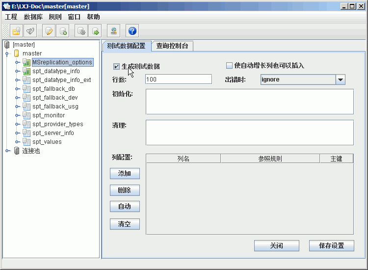
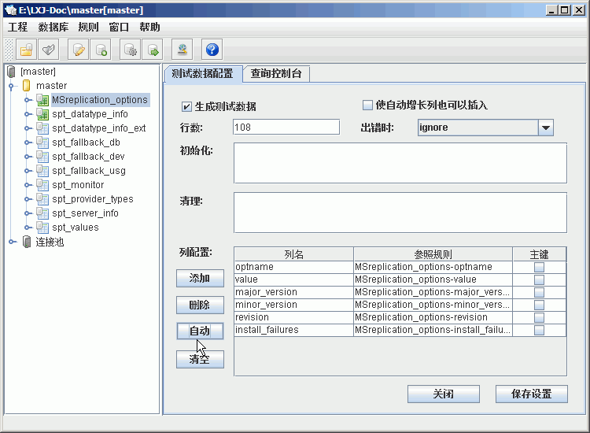

- 先在左边的树上选中需要生成数据的表，钩选生成测试数据,如下：

- 选项解释:
- 使自动增长列也可以插入，关闭ID列的自动增长特性，使其也可以手动插入值。
- 行数，为该表生成多少行测试数据。
- 出错时，出错是的处理情况：ignore,忽略，exit,退出系统，query，询问用户。
- 初始化，插入测试数据前的初始化，可以写入一条或多条SQL语句。比如如果要在插入测试数据前清空表，可以在初始化里面输入delete from table_name(如果有外键关联可以还要清空引用表里面的数据。
- 清理，插入测试数据后的清理工作，可以写入一条或多条SQL语句。
- 添加，添加一个列配置。点击添加后，右边的表格里面会多出一行，第一列是列，可以先个，第二列是引用的规则，如果没有可用的规则，可以点击规则->用户规则进行添加。
- 删除，删除一个列配置。
- 自动，自动生成测试配置，并自动生成相应规则。这是我们推荐的配置方式。根据自动生成的规则配置，然后再做适当修改。
- 清空，删除当前的配置。
- 配置完成后(如下图)，点击确定即可。
